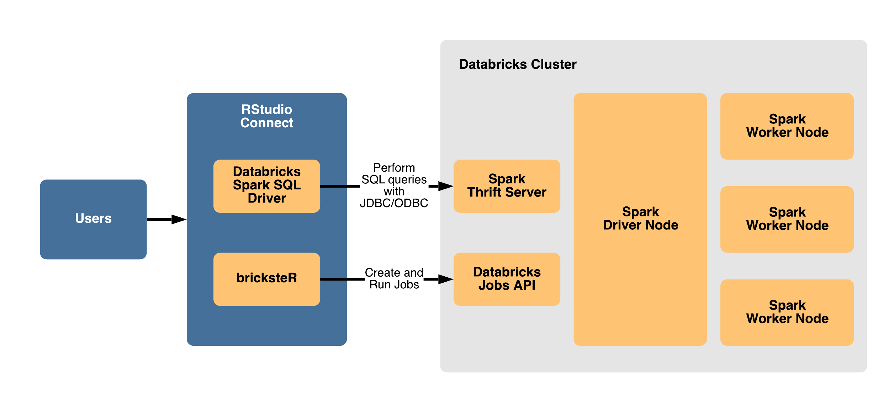

Using sparklyr with Databricks
Overview
This documentation demonstrates how to use sparklyr with Apache Spark in Databricks along with RStudio Team, RStudio Workbench, RStudio Connect, and RStudio Package Manager.
Using RStudio Team with Databricks
RStudio Team is a bundle of our popular professional software for developing data science projects, publishing data products, and managing packages.
RStudio Team and sparklyr can be used with Databricks to work with large datasets and distributed computations with Apache Spark. The most common use case is to perform interactive analysis and exploratory development with RStudio Workbench and sparklyr; write out the results to a database, file system, or cloud storage; then publish apps, reports, and APIs to RStudio Connect that query and access the results.

The sections below describe best practices and different options for configuring specific RStudio products to work with Databricks.
Best practices for working with Databricks
- Maintain separate installation environments - Install RStudio Workbench, RStudio Connect, and RStudio Package Manager outside of the Databricks cluster so that they are not limited to the compute resources or ephemeral nature of Databricks clusters.
- Connect to Databricks remotely - Work with Databricks as a remote compute resource, similar to how you would connect remotely to external databases, data sources, and storage systems. This can be accomplished using Databricks Connect (as described in the Connecting to Databricks remotely section below) or by performing SQL queries with JDBC/ODBC using the Databricks Spark SQL Driver on AWS or Azure.
- Restrict workloads to interactive analysis - Only perform workloads related to exploratory or interactive analysis with Spark, then write the results to a database, file system, or cloud storage for more efficient retrieval in apps, reports, and APIs.
- Load and query results efficiently - Because of the nature of Spark computations and the associated overhead, Shiny apps that use Spark on the backend tend to have performance and runtime issues; consider reading the results from a database, file system, or cloud storage instead.
Using RStudio Workbench with Databricks
There are two options for using sparklyr and RStudio Workbench with Databricks:
- Option 1: Connecting to Databricks remotely (Recommended Option)
- Option 2: Working inside of Databricks (Alternative Option)
Option 1 - Connecting to Databricks remotely
With this configuration, RStudio Workbench is installed outside of the Spark cluster and allows users to connect to Spark remotely using sparklyr with Databricks Connect.
This is the recommended configuration because it targets separate environments, involves a typical configuration process, avoids resource contention, and allows RStudio Workbench to connect to Databricks as well as other remote storage and compute resources.
View steps for connecting to Databricks remotely
Option 2 - Working inside of Databricks
If you cannot work with Spark remotely, you should install RStudio Workbench on the Driver node of a long-running, persistent Databricks cluster as opposed to a worker node or an ephemeral cluster.
With this configuration, RStudio Workbench is installed on the Spark driver node and allows users to connect to Spark locally using sparklyr.
This configuration can result in increased complexity, limited connectivity to other storage and compute resources, resource contention between RStudio Workbench and Databricks, and maintenance concerns due to the ephemeral nature of Databricks clusters.
View steps for working inside of Databricks
Using RStudio Connect with Databricks
The server environment within Databricks clusters is not permissive enough to support RStudio Connect or the process sandboxing mechanisms that it uses to isolate published content.
Therefore, the only supported configuration is to install RStudio Connect outside of the Databricks cluster and connect to Databricks remotely.
Whether RStudio Workbench is installed outside of the Databricks cluster (Recommended Option) or within the Databricks cluster (Alternative Option), you can publish content to RStudio Connect as long as HTTP/HTTPS network traffic is allowed from RStudio Workbench to RStudio Connect.
There are two options for using RStudio Connect with Databricks:
- Performing SQL queries with ODBC using the Databricks Spark SQL Driver (Recommended Option).
- Adding calls in your R code to create and run Databricks jobs with bricksteR and the Databricks Jobs API (Alternative Option)

Using RStudio Package Manager with Databricks
Whether RStudio Workbench is installed outside of the Databricks cluster (Recommended Option) or within the Databricks cluster (Alternative Option), you can install packages from repositories in RStudio Package Manager as long as HTTP/HTTPS network traffic is allowed from RStudio Workbench to RStudio Package Manager.